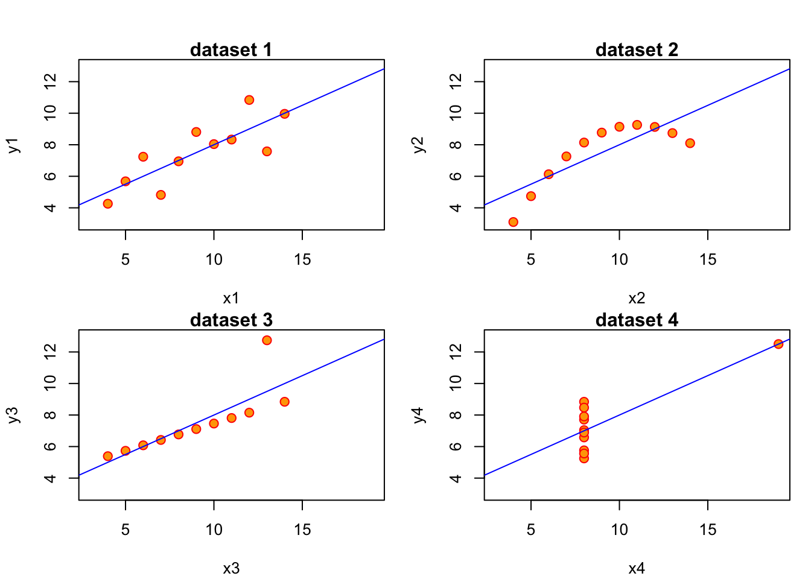
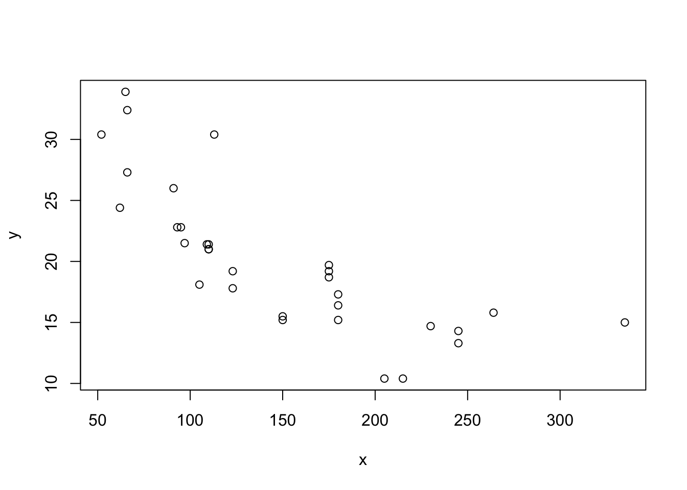
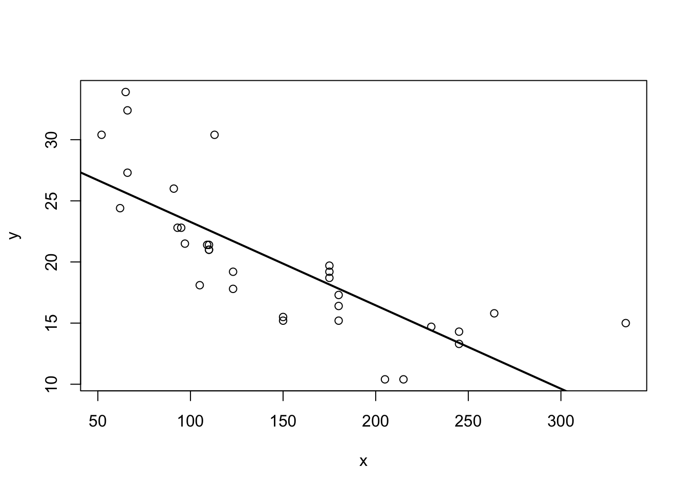
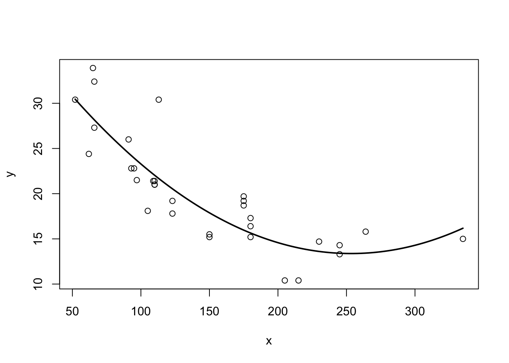
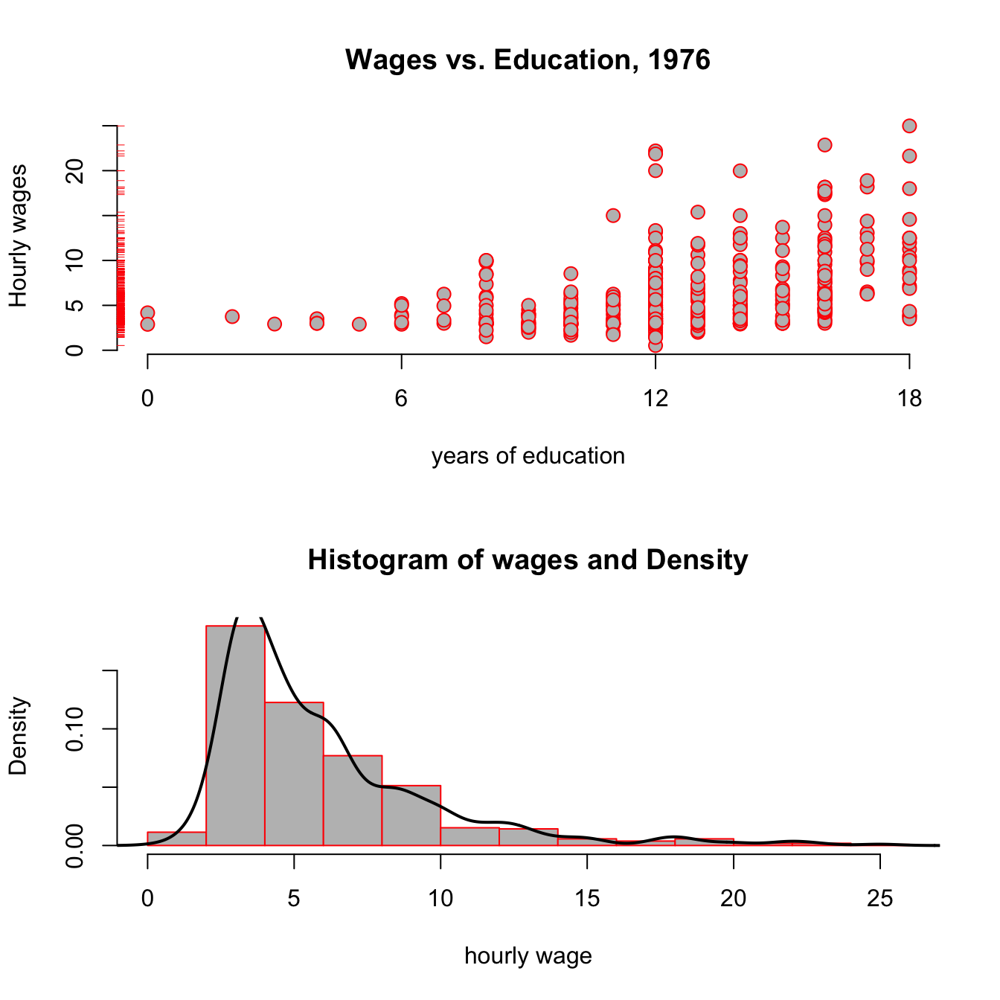
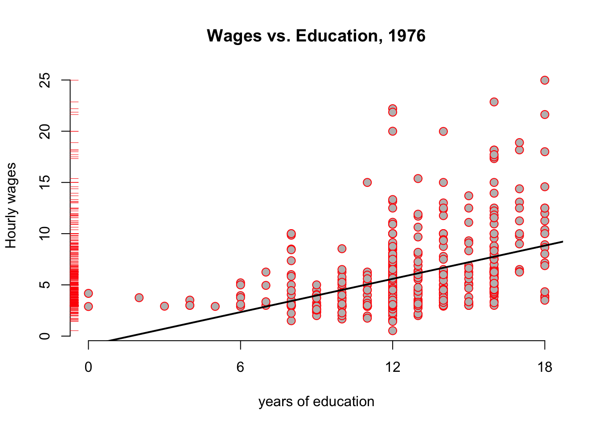
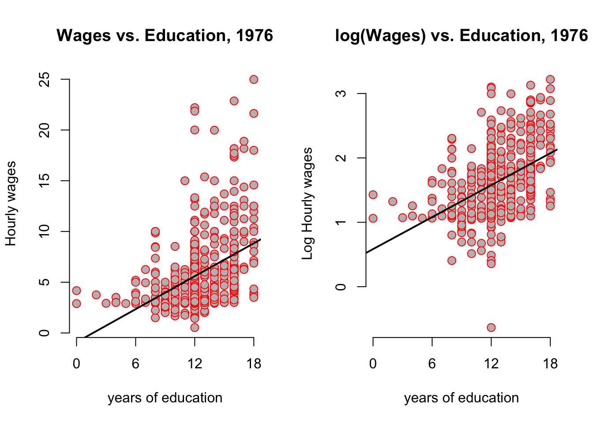
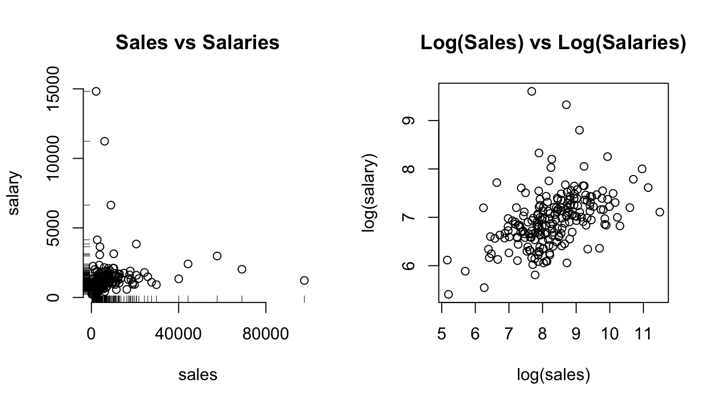

speed dist
1 4 2
2 4 10
3 7 4
4 7 22
5 8 16
6 9 105 Linear Regression
In this chapter we will learn an additional way how one can represent the relationship between outcome, or dependent variable variable y and an explanatory or independent variable x. We will refer throughout to the graphical representation of a collection of independent observations on x and y, i.e., a dataset.
5.2 Ordinary Least Squares (OLS) Estimator
The method to compute (or estimate) b_0 and b_1 we illustrated above is called Ordinary Least Squares, or OLS. b_0 and b_1 are therefore also often called the OLS coefficients. By solving problem Equation 5.4 one can derive an explicit formula for them:
b_1 = \frac{cov(x,y)}{var(x)}, \tag{5.5}
i.e. the estimate of the slope coefficient is the covariance between x and y divided by the variance of x, both computed from our sample of data. With b_1 in hand, we can get the estimate for the intercept as
b_0 = \bar{y} - b_1 \bar{x}. \tag{5.6}
where \bar{z} denotes the sample mean of variable z. The interpretation of the OLS slope coefficient b_1 is as follows. Given a line as in y = b_0 + b_1 x,
- b_1 = \frac{d y}{d x} measures the change in y resulting from a one unit change in x
- For example, if y is wage and x is years of education, b_1 would measure the effect of an additional year of education on wages.
There is an alternative representation for the OLS slope coefficient which relates to the correlation coefficient r. Remember from section @ref(summarize-two) that r = \frac{cov(x,y)}{s_x s_y}, where s_z is the standard deviation of variable z. With this in hand, we can derive the OLS slope coefficient as
\begin{align} b_1 &= \frac{cov(x,y)}{var(x)}\\ &= \frac{cov(x,y)}{s_x s_x} \\ &= r\frac{s_y}{s_x} \end{align} \tag{5.7}
In other words, the slope coefficient is equal to the correlation coefficient r times the ratio of standard deviations of y and x.
5.2.1 Linear Regression without Regressor
There are several important special cases for the linear regression introduced above. Let’s start with the most obvious one: What is the meaning of running a regression without any regressor, i.e. without a x? Our line becomes very simple. Instead of Equation 5.1, we get
y = b_0. \tag{5.8}
This means that our minization problem in Equation 5.4 also becomes very simple: We only have to choose b_0! We have
b_0 = \arg\min_{\text{int}} \sum_{i=1}^N \left[y_i - \text{int}\right]^2, which is a quadratic equation with a unique optimum such that b_0 = \frac{1}{N} \sum_{i=1}^N y_i = \overline{y}.
Least Squares without regressor (x) estimates the sample mean of the outcome variable (y), i.e. it produces ().
5.2.2 Regression without an Intercept
We follow the same logic here, just that we miss another bit from our initial equation and the minimisation problem in Equation 5.4 now becomes:
\begin{align} b_1 &= \arg\min_{\text{slope}} \sum_{i=1}^N \left[y_i - \text{slope } x_i \right]^2\\ \mapsto b_1 &= \frac{\frac{1}{N}\sum_{i=1}^N x_i y_i}{\frac{1}{N}\sum_{i=1}^N x_i^2} = \frac{\bar{x} \bar{y}}{\overline{x^2}} \end{align} \tag{5.9}
Tip
Least Squares without intercept (i.e. with b_0=0) is a line that passes through the origin.
In this case we only get to choose the slope b_1 of this anchored line.1 You should now try out both of those restrictions on our linear model by spending some time with
launchApp("reg_constrained")5.2.3 Centering A Regression
By centering or demeaning a regression, we mean to substract from both y and x their respective averages to obtain \tilde{y}_i = y_i - \bar{y} and \tilde{x}_i = x_i - \bar{x}. We then run a regression without intercept as above. That is, we use \tilde{x}_i,\tilde{y}_i instead of x_i,y_i in @ref(eq:b1line) to obtain our slope estimate b_1:
$$ b_1 &= \ &= \ &=
\end{align} $$ {#eq-bline-centered}
This last expression is identical to the one in (eq1beta1hat?)! It’s the standard OLS estimate for the slope coefficient. We note the following:
Note
Adding a constant to a regression produces the same result as centering all variables and estimating without intercept. So, unless all variables are centered, always include an intercept in the regression.
To get a better feel for what is going on here, you can try this out now by yourself by typing:
launchApp("demeaned_reg")5.2.4 Standardizing A Regression
Standardizing a variable z means to demean as above, but in addition to divide the demeaned value by its own standard deviation. Similarly to what we did above for centering, we define transformed variables \breve{y}_i = \frac{y_i-\bar{y}}{\sigma_y} and \breve{x}_i = \frac{x_i-\bar{x}}{\sigma_x} where \sigma_z is the standard deviation of variable z. From here on, you should by now be used to what comes next! As above, we use \breve{x}_i,\breve{y}_i instead of x_i,y_i in Equation 5.9 to this time obtain:
\begin{align} b_1 &= \frac{\frac{1}{N}\sum_{i=1}^N \breve{x}_i \breve{y}_i}{\frac{1}{N}\sum_{i=1}^N \breve{x}_i^2}\\ &= \frac{\frac{1}{N}\sum_{i=1}^N \frac{x_i - \bar{x}}{\sigma_x} \frac{y_i - \bar{y}}{\sigma_y}}{\frac{1}{N}\sum_{i=1}^N \left(\frac{x_i - \bar{x}}{\sigma_x}\right)^2} \\ &= \frac{Cov(x,y)}{\sigma_x \sigma_y} \\ &= Corr(x,y) (\#eq:bline-standardized) \end{align} \tag{5.10}
Tip
After we standardize both y and x, the slope coefficient b_1 in the regression without intercept is equal to the correlation coefficient.
And also for this case we have a practical application for you. Just type this and play around with the app for a little while!
launchApp("reg_standardized")5.3 Predictions and Residuals
Now we want to ask how our residuals e_i relate to the prediction \hat{y_i}. Let us first think about the average of all predictions \hat{y_i}, i.e. the number \frac{1}{N} \sum_{i=1}^N \hat{y_i}. Let’s just take Equation 5.2 and plug this into this average, so that we get
\begin{align} \frac{1}{N} \sum_{i=1}^N \hat{y_i} &= \frac{1}{N} \sum_{i=1}^N b_0 + b_1 x_i \\ &= b_0 + b_1 \frac{1}{N} \sum_{i=1}^N x_i \\ &= b_0 + b_1 \bar{x} \\ \end{align}
But that last line is just equal to the formula for the OLS intercept Equation 5.6, b_0 = \bar{y} - b_1 \bar{x}! That means of course that
\frac{1}{N} \sum_{i=1}^N \hat{y_i} = b_0 + b_1 \bar{x} = \bar{y} in other words:
Note
The average of our predictions \hat{y_i} is identically equal to the mean of the outcome y. This implies that the average of the residuals is equal to zero.
Related to this result, we can show that the prediction \hat{y} and the residuals are uncorrelated, something that is often called orthogonality between \hat{y}_i and e_i. We would write this as
\begin{align} Cov(\hat{y},e) &=\frac{1}{N} \sum_{i=1}^N (\hat{y}_i-\bar{y})(e_i-\bar{e}) = \frac{1}{N} \sum_{i=1}^N (\hat{y}_i-\bar{y})e_i \\ &= \frac{1}{N} \sum_{i=1}^N \hat{y}_i e_i-\bar{y} \frac{1}{N} \sum_{i=1}^N e_i = 0 \end{align}
It’s useful to bring back the sample data which generate figure Figure 5.1 at this point in order to verify these claims:
y y_hat error
1 2.09 2.57 -0.48
2 2.79 3.41 -0.62
3 6.49 4.25 2.24
4 1.71 5.10 -3.39
5 9.89 5.94 3.95
6 7.62 6.78 0.83
7 4.86 7.63 -2.77
8 7.38 8.47 -1.09
9 10.63 9.31 1.32Let’s check that these claims are true in this sample of data. We want that
- The average of \hat{y}_i to be the same as the mean of y
- The average of the errors should be zero.
- Prediction and errors should be uncorrelated.
# 1.
all.equal(mean(ss$error), 0)[1] TRUE# 2.
all.equal(mean(ss$y_hat), mean(ss$y))[1] TRUE# 3.
all.equal(cov(ss$error,ss$y_hat), 0)[1] TRUESo indeed we can confirm this result with our test dataset. Great!
5.4 Correlation, Covariance and Linearity
It is important to keep in mind that Correlation and Covariance relate to a linear relationship between x and y. Given how the regression line is estimated by OLS (see just above), you can see that the regression line inherits this property from the Covariance. A famous exercise by Francis Anscombe (1973) illustrates this by constructing 4 different datasets which all have identical linear statistics: mean, variance, correlation and regression line are identical. However, the usefulness of the statistics to describe the relationship in the data is not clear.

The important lesson from this example is the following:
Warning
Always visually inspect your data, and don’t rely exclusively on summary statistics like mean, variance, correlation and regression line. All of those assume a linear relationship between the variables in your data.
The mission of Anscombe has been continued recently. As a result of this we can have a look at the datasauRus package, which pursues Anscbombe’s idea through a multitude of funny data sets, all with the same linear statistics. Don’t just compute the covariance, or you might actually end up looking at a Dinosaur! What? Type this to find out:
launchApp("datasaurus")
aboutApp("datasaurus")5.4.1 Non-Linear Relationships in Data
Suppose our data now looks like this:

Putting our previous best line defined in equation Equation 5.3 as y = b_0 + b_1 x + e, we get something like this:
l1 = lm(mpg~hp,data=mtcars)
plot(mtcars$hp,mtcars$mpg,xlab="x",ylab="y")
abline(reg=l1,lw=2)
Somehow when looking at ?fig-non-line-cars-ols one is not totally convinced that the straight line is a good summary of this relationship. For values x\in[50,120] the line seems to low, then again too high, and it completely misses the right boundary. It’s easy to address this shortcoming by including higher order terms of an explanatory variable. We would modify Equation 5.3 to read now
y_i = b_0 + b_1 x_i + b_2 x_i^2 + e_i \tag{5.11}
This is a special case of multiple regression, which we will talk about in chapter (multiple-reg?). You can see that there are multiple slope coefficients. For now, let’s just see how this performs:

5.5 Analysing Var(y)
Analysis of Variance (ANOVA) refers to a method to decompose variation in one variable as a function of several others. We can use this idea on our outcome y. Suppose we wanted to know the variance of y, keeping in mind that, by definition, y_i = \hat{y}_i + e_i. We would write
\begin{align} Var(y) &= Var(\hat{y} + e)\\ &= Var(\hat{y}) + Var(e) + 2 Cov(\hat{y},e)\\ &= Var(\hat{y}) + Var(e) (\#eq:anova) \end{align}
We have seen above in @ref(pred-resids) that the covariance between prediction \hat{y} and error e is zero, that’s why we have Cov(\hat{y},e)=0 in @ref(eq:anova). What this tells us in words is that we can decompose the variance in the observed outcome y into a part that relates to variance as explained by the model and a part that comes from unexplained variation. Finally, we know the definition of variance, and can thus write down the respective formulae for each part:
- Var(y) = \frac{1}{N}\sum_{i=1}^N (y_i - \bar{y})^2
- Var(\hat{y}) = \frac{1}{N}\sum_{i=1}^N (\hat{y_i} - \bar{y})^2, because the mean of \hat{y} is \bar{y} as we know. Finally,
- Var(e) = \frac{1}{N}\sum_{i=1}^N e_i^2, because the mean of e is zero.
We can thus formulate how the total variation in outcome y is aportioned between model and unexplained variation:
The total variation in outcome (y) (often called SST, or total sum of squares) is equal to the sum of explained squares (SSE) plus the sum of residuals (SSR). We have thus SST = SSE + SSR.
5.6 Assessing the Goodness of Fit
In our setup, there exists a convenient measure for how good a particular statistical model fits the data. It is called R^2 (R squared), also called the coefficient of determination. We make use of the just introduced decomposition of variance, and write the formula as
\begin{equation} R^2 = \frac{\text{variance explained}}{\text{total variance}} = \frac{SSE}{SST} = 1 - \frac{SSR}{SST}\in[0,1] (\#eq:Rsquared) \end{equation}
It is easy to see that a good fit is one where the sum of explained squares (SSE) is large relativ to the total variation (SST). In such a case, we observe an R^2 close to one. In the opposite case, we will see an R^2 close to zero. Notice that a small R^2 does not imply that the model is useless, just that it explains a small fraction of the observed variation.
5.7 An Example: A Log Wage Equation
Let’s consider the following example concerning wage data collected in the 1976 Current Population Survey in the USA.2 We want to investigate the relationship between average hourly earnings, and years of education. Let’s start with a plot:
data("wage1", package = "wooldridge") # load data
# a function that returns a plot
plotfun <- function(wage1,log=FALSE,rug = TRUE){
y = wage1$wage
if (log){
y = log(wage1$wage)
}
plot(y = y,
x = wage1$educ,
col = "red", pch = 21, bg = "grey",
cex=1.25, xaxt="n", frame = FALSE, # set default x-axis to none
main = ifelse(log,"log(Wages) vs. Education, 1976","Wages vs. Education, 1976"),
xlab = "years of education",
ylab = ifelse(log,"Log Hourly wages","Hourly wages"))
axis(side = 1, at = c(0,6,12,18)) # add custom ticks to x axis
if (rug) rug(wage1$wage, side=2, col="red") # add `rug` to y axis
}
par(mfcol = c(2,1)) # set up a plot with 2 panels
# plot 1: standard scatter plot
plotfun(wage1)
# plot 2: add a panel with histogram+density
hist(wage1$wage,prob = TRUE, col = "grey", border = "red",
main = "Histogram of wages and Density",xlab = "hourly wage")
lines(density(wage1$wage), col = "black", lw = 2)
Looking at the top panel of figure @ref(fig:wooldridge-wages), you notice two things: From the red ticks on the y axis, you see that wages are very concentrated at around 5 USD per hour, with fewer and fewer observations at higher rates; and second, that it seems that the hourly wage seems to increase with higher education levels. The bottom panel reinforces the first point, showing that the estimated pdf (probability density function) shown as a black line has a very long right tail: there are always fewer and fewer, but always larger and larger values of hourly wage in the data.
You have seen this shape of a distribution in the tutorial for chapter 2 already! Do you remember the name of this particular shape of a distribution? (why not type ScPoEconometrics::runTutorial(‘chapter2’)) to check?
Let’s run a first regression on this data to generate some intution:
\begin{equation} \text{wage}_i = b_0 + b_1 \text{educ}_i + e_i (\#eq:wage) \end{equation}
We use the lm function for this purpose as follows:
hourly_wage <- lm(formula = wage ~ educ, data = wage1)and we can add the resulting regression line to our above plot:
plotfun(wage1)
abline(hourly_wage, col = 'black', lw = 2) # add regression line
The hourly_wage object contains the results of this estimation. We can get a summary of those results with the summary method:
summary(hourly_wage)
Call:
lm(formula = wage ~ educ, data = wage1)
Residuals:
Min 1Q Median 3Q Max
-5.3396 -2.1501 -0.9674 1.1921 16.6085
Coefficients:
Estimate Std. Error t value Pr(>|t|)
(Intercept) -0.90485 0.68497 -1.321 0.187
educ 0.54136 0.05325 10.167 <2e-16 ***
---
Signif. codes: 0 '***' 0.001 '**' 0.01 '*' 0.05 '.' 0.1 ' ' 1
Residual standard error: 3.378 on 524 degrees of freedom
Multiple R-squared: 0.1648, Adjusted R-squared: 0.1632
F-statistic: 103.4 on 1 and 524 DF, p-value: < 2.2e-16The main interpretation of this table can be read off the column labelled Estimate, reporting estimated coefficients b_0,b_1:
- With zero year of education, the hourly wage is about -0.9 dollars per hour (row named
(Intercept)) - Each additional year of education increase hourly wage by 54 cents. (row named
educ) - For example, for 15 years of education, we predict roughly -0.9 + 0.541 * 15 = 7.215 dollars/h.
5.8 Scaling Regressions
Regression estimates ((b_0, b_1)) are in the scale of the data. The actual value of the estimates will vary, if we change the scale of the data. The overall fit of the model to the data would not change, however, so that the (R^2) statistic would be constant.
Suppose we wanted to use the above estimates to report the effect of years of education on annual wages instead of hourly ones. Let’s assume we have full-time workers, 7h per day, 5 days per week, 45 weeks per year. Calling this factor \delta = 7 \times 5 \times 45 = 1575, we have that x dollars per hour imply x \times \delta = x \times 1575 dollars per year.
What would be the effect of using \tilde{y} = wage \times 1575 instead of y = wage as outcome variable on our regression coefficients b_0 and b_1? Well, let’s try!
| Dependent variable: | ||
| wage | annual_wage | |
| (1) | (2) | |
| educ | 0.541*** | 852.641*** |
| (0.053) | (83.866) | |
| Constant | -0.905 | -1,425.141 |
| (0.685) | (1,078.824) | |
| Observations | 526 | 526 |
| R2 | 0.165 | 0.165 |
| Adjusted R2 | 0.163 | 0.163 |
| Residual Std. Error (df = 524) | 3.378 | 5,320.963 |
| F Statistic (df = 1; 524) | 103.363*** | 103.363*** |
| Note: | p<0.1; p<0.05; p<0.01 | |
Let’s call the coefficients in the column labelled (1) as b_0 and b_1, and let’s call the ones in column (2) b_0^* and b_1^*. In column (1) we see that another year increaeses hourly wage by 0.54 dollars, as before. In column (2), the corresponding number is 852.64, i.e. another year of education will increase annual wages by 852.64 dollars, on average. Notice however, that b_0 \times \delta = -0.9 \times 1575 = -1425.14 = b_0^* and that b_1 \times \delta = 0.54 \times 1575 = 852.64 = b_1^*, that is we just had to multiply both coefficients by the scaling factor applied to original outcome y to obtain our new coefficients b_0^* and b_1^*! Also, observe that the R^2s of both regressions are identical! So, really, we did not have to run the regression in column (2) at all to make this change: multiplying all coefficients through by \delta is enough in this case. We keep the identically same fit to the data.
Rescaling the regressors x is slightly different, but it’s easy to work out how different, given the linear nature of the covariance operator, which is part of the OLS estimator. Suppose we rescale x by the number c. Then, using the OLS formula in @ref(eq:beta1hat), we see that we get new slope coefficient b_1^* via
\begin{align} b_1^* &= \frac{Cov(cx,y)}{Var(cx)} \\ &= \frac{cCov(x,y)}{c^2 Var(x)} \\ &= \frac{1}{c} b_1. \end{align}
As for the intercept, and by using @ref(eq:beta0hat) \begin{align} b_0^* &= \bar{y} - b_1^* \frac{1}{N}\sum_{i=1}^N c \cdot x_i \\ &= \bar{y} - b_1^* \frac{c}{N}\sum_{i=1}^N x_i \\ &= \bar{y} - \frac{1}{c} b_1 c * \bar{x} \\ &= \bar{y} - b_1 * \bar{x} \\ &= b_0 \end{align}
That is, we change the slope by the inverse of the scaling factor applied to regressor x, but the intercept is unaffected from this. You should play around for a while with our rescaling app to get a feeling for this:
library(ScPoApps)
launchApp('Rescale')5.9 A Particular Rescaling: The \log Transform
The natural logarithm is a particularly important transformation that we often encounter in economics. Why would we transform a variable with the \log function to start with?
- Several important economic variables (like wages, city size, firm size, etc) are approximately log-normally distributed. By transforming them with the \log, we obtain an approximately normally distributed variable, which has desirable properties for our regression.
- Applying the \log reduces the impact of outliers.
- The transformation allows for a convenient interpretation in terms of percentage changes of the outcome variable.
Let’s investigate this issue in our running example by transforming the wage data above. Look back at the bottom panel of figure @ref(fig:wooldridge-wages): Of course you saw immediately that this looked a lot like a log-normal distribution, so point 1. above applies. We modify the left hand side of equation @ref(eq:wage):
\begin{equation} \log(\text{wage}_i) = b_0 + b_1 \text{educ}_i + e_i (\#eq:log-wage) \end{equation}
Let’s use the update function to modify our previous regression model:
log_hourly_wage = update(hourly_wage, log(wage) ~ ., data = wage1)The update function takes an existing lm object, like hourly_wage here, and updates the formula. Here the . on the right hand side means leave unchanged (so the RHS stays unchanged). How do our pictures change?
par(mfrow = c(1,2))
plotfun(wage1,rug = FALSE)
abline(hourly_wage, col = 'black', lw = 2) # add regression line
plotfun(wage1,log = TRUE, rug = FALSE)
abline(log_hourly_wage, col = 'black', lw = 2) # add regression line
par(mfrow = c(1,1))It looks as if the regression line has the same slope, but beware of the different scales of the y-axis! You can clearly see that all y-values have been compressed by the log transformation. The log case behaves differently from our scaling by a constant number case above because it is a nonlinear function. Let’s compare the output between both models:
| (1) | (2) | |
|---|---|---|
| (Intercept) | -0.905 | 0.584 |
| (0.685) | (0.097) | |
| educ | 0.541 | 0.083 |
| (0.053) | (0.008) | |
| Num.Obs. | 526 | 526 |
| R2 | 0.165 | 0.186 |
| R2 Adj. | 0.163 | 0.184 |
| AIC | 2777.4 | 2432.4 |
| BIC | 2790.2 | 2445.2 |
| Log.Lik. | -1385.712 | -359.378 |
| F | 103.363 | 119.582 |
| RMSE | 3.37 | 0.48 |
The interpretation of the transformed model in column (2) is now the following:
We call a regression of the form ((y) = b_0 + b_1 x + u) a log-level specification, because we regressed the log of a variable on the level (i.e not the log!) of another variable. Here, the impact of increasing (x) by one unit is to increase (y) by (100 b_1) percent. In our example: an additional year of education will increase hourly wages by 8.3%. Notice that this is very different from saying …increases log hourly wages by 8.3%, which is wrong.
Notice that the R^2 slightly improved, so have a better fit to the data. This is due the fact that the log compressed large outlier values. Whether we apply the log to left or right-hand side variables makes a difference, as outlined in this important table:
| Specification | Outcome Var | Regressor | Interpretation of b_1 | Comment |
|---|---|---|---|---|
| Level-level | y | x | \Delta y = b_1 \Delta x | Standard |
| Level-log | y | \log(x) | \Delta y = \frac{b_1}{100} \Delta x | less frequent |
| Log-level | \log(y) | x | \% \Delta y = (100 b_1) \Delta x | Semi-elasticity |
| Log-Log | \log(y) | \log(x) | \% \Delta y = \% \Delta b_1 x | Elasticity |
You may remember from your introductory micro course what the definition of the elasticity of y with respect to x is: This number tells us by how many percent y will change, if we change x by one percent. Let’s look at another example from the wooldridge package of datasets, this time concerning CEO salaries and their relationship with company sales.
data("ceosal1", package = "wooldridge")
par(mfrow = c(1,2))
plot(salary ~ sales, data = ceosal1, main = "Sales vs Salaries",xaxt = "n",frame = FALSE)
axis(1, at = c(0,40000, 80000))
rug(ceosal1$salary,side = 2)
rug(ceosal1$sales,side = 1)
plot(log(salary) ~ log(sales), data = ceosal1, main = "Log(Sales) vs Log(Salaries)")
In the left panel of figure @ref(fig:ceo-sal) you clearly see that both sales and salary have very long right tails, as indicated by the rug plots on either axis. As a consequence, the points are clustered in the bottom left corner of the plot. We suspect a positive relationship, but it’s hard to see. Contrast this with the right panel, where both axis have been log transformed: the points are nicely spread out, clearly spelling out a positive correlation. Let’s see what this gives in a regression model!
\widehat{\log(salary)} = 4.82 + 0.26 \times \log(sales)
Refering back at table @ref(tab:loglog), here we have a log-log specification. Therefore we interpret this regression as follows:
In a log-log equation, the slope coefficient (b_1) is the elasticity of (y) with respect to changes in (x). Here: A 1% increase in sales is associated to a 0.26% increase in CEO salaries. Note, again, that there is no log in this statement.
This slope is related to the angle between vectors \mathbf{a} = (\overline{x},\overline{y}), and \mathbf{b} = (\overline{x},0). Hence, it’s related to the scalar projection of \mathbf{a} on \mathbf{b}.↩︎
This example is close to the vignette of the wooldridge package, whose author I hereby thank for the excellent work.↩︎